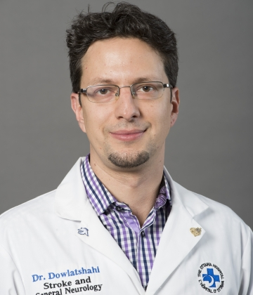

Dr. Ashkan Shoamanesh
CoHESIVE Chair
Dr. Shoamanesh is the founding Director of the Hemorrhagic Stroke Research Program within the Stroke and Cognition Program at the Population Health Research Institute at Hamilton Health Sciences. He is a Stroke Neurologist who completed his residency at the University of British Columbia in 2012, followed by fellowship training at the Boston University School of Medicine/Framingham Heart Study (2012-13) and Harvard Medical School (2013-14). He is an Assistant Professor of Medicine (Neurology) at McMaster University, where he holds the Marta and Owen Boris Chair in Stroke Research and Care and serves as Director of the Stroke Fellowship Program.
His main research focus is the characterization of hemorrhage-prone cerebral small vessel disease and the optimization of clinical care in this patient population. He leads as principal investigator of the global phase III ENRICH-AF trial (IIS Daiichi Sankyo; NCT03950076) investigating optimal stroke prevention in intracranial hemorrhage survivors with atrial fibrillation at over 300 sites in 22 countries and additionally serves on the Steering and/or Executive Committees of several public and industry funded randomized trials, including ASPIRE (NIH-StrokeNET; NCT03907046), ANNEXA-I (Portola Pharmaceuticals; NCT03661528); SATURN (NIH-StrokeNET [Canadian National PI]; NCT03936361); and NAVIGATE ESUS (Bayer AG; NCT02313909).
Dr. Shoamanesh has published a large number of manuscripts in leading scientific journals. He has been awarded the most prestigious early career awards in stroke granted by the American Heart/Stroke Association (2015 Mordecai Y.T. Globus and 2019 Robert G. Siekert New Investigator Awards in Stroke), American Academy of Neurology (2020 Michael S. Pessin Stroke Leadership Prize), and Heart and Stroke Foundation of Canada (2019 Henry J.M. Barnett Scholarship – recognizing the highest ranked National New Investigator in cerebrovascular disease research), amongst other notable awards, including the 2019 International Stroke Conference Paul Dudley White International Scholar Award, and the 2015 European Stroke Conference Young Investigator Award.
Dr. Robert Hart
Robert G. Hart, M.D. led the stroke program at the University of Texas Health Sciences Center at San Antonio for 25 years before relocating to McMaster University in 2011. He is Professor of Medicine (Neurology) at McMaster University and is a Senior Scientist of Population Health Research Institute. Dr. Hart has long-standing interests in stroke prevention research and clinical trials. He has directed several randomized clinical trials serving as the principal investigator of the NIH/NINDS-sponsored Stroke Prevention in Atrial Fibrillation (SPAF) I, II and III trials (1987-2000) and has participated as a site lead investigator in more than a dozen others. Following completion of the SPAF trials, he was the co-principal investigator of the NIH/NINDS-sponsored Secondary Prevention of Small Subcortical Strokes (SPS3) trials. Between 2013-2018, he was the lead investigator for the large, international NAVIGATE-ESUS testing rivaroxaban in embolic strokes of uncertain source. Between 2000 and 2008, he was a special consultant to the NINDS/NIH Clinical Trials Group. Antithrombotic therapies to prevent stroke in atrial fibrillation (especially novel oral anticoagulants) and intracranial bleeding related to oral anticoagulants are areas of special interest.
Dr. Ken Butcher
Dr. Butcher is a Professor in Neurology, at the University of Alberta. His major clinical and research interests are in acute stroke care. He completed his PhD concurrently with his MD, at the University of Western Ontario. His thesis was based on the autonomic effects of stroke. Following his Neurology residency at the University of Alberta, Dr. Butcher traveled to Australia, where he completed a post-doctoral Fellowship in MRI and advanced CT imaging of acute stroke. In 2006 he returned to Alberta, and took up his current faculty position. His active research projects include a randomized controlled trial of blood pressure reduction in intracerebral hemorrhage and MRI as well as CT perfusion studies aimed at extending the time window for stroke thrombolysis. He has personnel awards and grant-in-aid funding from the Alberta Heritage Innovates Health Solutions, Canadian Institutes of Health Research and the Heart and Stroke Foundation of Canada. He holds a Canada Research Chair in Cerebrovascular Disease and the Heart and Stroke Foundation of Alberta, NWT and Nunavut Professorship in Stroke Medicine.
Dr. Mike Sharma
Dr Sharma is a Stroke Neurologist who holds the Michael G DeGroote Chair in Stroke Prevention at McMaster University. He completed his MD at Dalhousie, neurology residency at Western University and was a stroke fellow at McGill and University of Ottawa. He has an MSc in Clinical Epidemiology and led the stroke program at the University of Ottawa prior to relocating to McMaster in 2013. He is a clinical trialist and leads trials in stroke prevention in the Stroke program at the Population Health Research Institute and Hamilton Health Sciences. Dr Sharma has an interest in prevention of covert stroke, stroke economics and acute secondary prevention. He is the Chair of the Canadian Stroke Consortium, the professional organization for stroke physicians in Canada, and was the Deputy Director for Clinical affairs and Health Policy of the Canadian Stroke Network.
Dr. Dar Dowlatshahi
Dr. Dar Dowlatshahi is an Associate Professor at the University of Ottawa (Medicine & School of Epidemiology and Public Health), a Scientist with the Ottawa Hospital Research Institute, a Stroke Neurologist at the Ottawa Hospital, and the Scientific Director of the Ottawa Stroke Program. He obtained his MD and PhD from McMaster University, followed by a residency in Neurology at the University of Ottawa, and a Stroke Fellowship at the University of Calgary. Dar’s research interests include acute neuroimaging for intracerebral hemorrhage and predictors of early hematoma expansion. His research is supported by the Heart & Stroke Foundation of Canada, CIHR, the Canadian Partnership for Stroke Recovery, the J.P. Bickell Foundation, and the Ministry of Research and Innovation Ontario. He has received the Heart and Stroke Foundation of Canada’s New Investigator and Clinician-Scientist awards, and the inaugural uOttawa Department of Medicine Clinician-Scientist Chair.
Dr. Eric Smith
Dr. Smith is an Associate Professor of Neurology in the Department of Clinical Neurosciences at the University of Calgary, a member of the Calgary Stroke Program, and holder of the Katthy Taylor Chair in Vascular Dementia. Research interests include stroke quality improvement, performance measurement, guideline development, and diagnosis and treatment of cerebral amyloid angiopathy. He received his MD degree from McGill University in 1998, completed residency in Neurology at Massachusetts General Hospital and Brigham and Women's Hospital in 2002, and finished a Vascular Neurology fellowship at Massachusetts General Hospital in 2003. He has a Master’s of Public Health degree (MPH) from the Harvard School of Public Health. Dr. Smith won the Robert G. Siekert New Investigator Award from the American Stroke Association in 2010 and was selected to be a member of the College of New Scholars of the Royal Society of Canada. He currently chairs the Steering Committee of the American Heart Association Get With The Guidelines program, which includes data on more than five million ischemic stroke and intracerebral hemorrhage hospitalizations.

Dr. Patrice Lindsay
Dr. Lindsay is currently the Director of Systems Change and Stroke Program at the Heart and Stroke Foundation of Canada, where she leads strategic directions for stroke nationally, building partnerships and collaborations to drive system improvements, stroke awareness, the development and implementation of stroke best practice guidelines, and ongoing quality monitoring and reporting. She is a respected expert member of several international stroke related committees, including the World Stroke Organization Board of Directors, and the International Alliance for Paediatric Stroke Board of Directors. Dr. Lindsay is a recipient of the Queen Elizabeth II Diamond Jubilee medal for her efforts to improve stroke care and outcomes in Canada and internationally; and the University of Toronto Institute of Health Policy, Management and Evaluation Leadership award. Dr. Lindsay has a bachelor’s degree in nursing from the University of Western Ontario and completed her PhD in Health Services Research/Evaluation and Outcomes at the University of Toronto.
Dr. Carlos S. Kase
Born on 8/26/43 in Buenos Aires, Argentina. High school and medical school education in Santiago, Chile, with M.D. degree from the Catholic University of Chile in May 1967. Training in Neurology and Vascular Neurology at the Massachusetts General Hospital in Boston, 1972-1973, and 1977-1978. Certified by the American Board of Psychiatry and Neurology in Neurology (1980) and Vascular Neurology (2005, 2015).
In 1978 joined Dr. J. P. Mohr in forming the Neurology Department at the University of South Alabama in Mobile, Alabama. In 1984 Dr. Kase joined the Department of Neurology at Boston University School of Medicine as Assistant Professor of Neurology, subsequently promoted to Associate and then Professor of Neurology. In 2004 became Chair of the Department of Neurology at Boston University School of Medicine and Neurologist-in-Chief, Boston Medical Center, until 2016, when he took a position as Professor of Neurology at Emory University School of Medicine in Atlanta, Georgia, until the present time.
Professional interests have been in the area of cerebrovascular diseases, performing clinical studies and clinico-pathologic correlations in intracerebral hemorrhage and cerebral infarction. Research activities have included participation in multicenter NIH-sponsored studies such as the Stroke Data Bank (NINCDS), the Warfarin Aspirin Recurrent Stroke Study (WARSS), the Warfarin vs. Aspirin for Symptomatic Intracranial Disease (WASID) Study, the Secondary Prevention of Small Subcortical Strokes (SPS3) study, the Insulin Resistance Intervention after Stroke (IRIS) trial, and the Randomized, Multicenter Clinical Trial of Unruptured Brain AVMs (ARUBA), as well as in a number of therapeutic clinical trials. In addition, Dr. Kase participated from 1984 to 2016 in the Framingham Study, where he conducted a number of epidemiological studies in the area of stroke risk factors.
Dr. Rustam Al-Shahi Salman
Rustam Al-Shahi Salman is a professor of clinical neurology at the University of Edinburgh and an honorary consultant neurologist in NHS Lothian. He became interested in neurology during medical training in Cambridge and was inspired to work on common neurological problems by Charles Warlow and the stroke research group in Edinburgh, which he joined in 1998 as an MRC clinical training fellow, progressing to MRC patient-oriented clinician scientist and senior clinical fellowships until 2016. Rustam’s clinical and research interests focus on the frequency, prognosis, treatment, and pathophysiology of intracranial haemorrhage, using research methods such as randomised controlled trials, community- or population-based cohort and case-control studies, brain banking, and meta-analysis. His clinical work includes acute TIA/stroke/thrombolysis services, acute neurology services including a rapid access neurology clinic for his local emergency department, and specialist outpatient clinics. Rustam was one of the lead authors of The Lancet’s 2014 Series on Increasing Value and Reducing Waste in Research and a founding member of the REWARD Alliance (http://rewardalliance.net). He has recently completed recruitment to the RESTART trial of antiplatelet drugs after ICH (www.RESTARTtrial.org) and is running the SoSTART trial of oral anticoagulation for AF after ICH (www.SoSTART.ed.ac.uk). You can follow Rustam on Twitter at @BleedingStroke.
Dr. Jeff Healey
Jeff Healey is the director of arrhythmia services and professor of medicine at McMaster University in Hamilton, Ontario Canada. He is also a clinical trialist, and member of the Population Health Research Institute (PHRI) where he is appointed the PHRI Chair in Cardiology Research. Dr. Healey completed his clinical training in cardiology and electrophysiology at the University of Ottawa Heart Institute and completed his Master’s degree in health research methodology at McMaster University.
Currently, Dr. Healey’s clinically activities involve both catheter ablation and pacemaker/ICD implantation. His research involves the conduct of randomized clinical trials and large registries in the fields of cardiac arrhythmias and cardiac devices. His area of research focus is studying the effect of risk factors, and risk factor modification on the development of atrial fibrillation and its complications, such as stroke
Dr. Healey was the lead author of the ASSERT trial, which was published in the New England Journal of Medicine in 2012 and demonstrated the increased stroke risk associated with sub-clinical atrial fibrillation detected by pacemakers. Thomson-Reuters recognized ASSERT as the 38th most-cited scientific publication in 2012 (#16 in Medicine). He is also leading 2 major ongoing studies. The SIMPLE trial is a 2500-patient randomized trial evaluating the value of performing intra-operative defibrillation threshold testing at the time of ICD insertion. The RELY AF Registry is a 15,000-patient worldwide registry, examining the causes, treatment and outcomes in patients with atrial fibrillation. Dr. Healey has published over 299 manuscripts and abstracts, including 80 manuscripts in the past 2 years (28 as first or last author).
Dr. Healey has received numerous grants from the Canadian Institutes of Health Research, the Heart and Stroke Foundation and from industry. He is the co-chair of the Canadian Cardiovascular Society’s Atrial Fibrillation Guidelines Committee, co-chair of the CCS Guidelines for Perioperative management of pacemakers and defibrillators and past chair of the Cardiac Care Network of Ontario’s Heart Rhythm Working group.
Dr. Guillaume Paré
Guillaume Paré is Associate Professor and University Scholar, Dept. of Pathology & Molecular Medicine at McMaster University, Director of the Genetic and Molecular Epidemiology Laboratory and Senior Scientist at the Population Health Research Institute. Dr. Paré currently holds a Canada Research Chair in Genetic & Molecular Epidemiology, as well as a Cisco Professorship. His clinical interests are centered on lipoprotein disorders, obesity and cardiovascular disease prevention. His corresponding research interests are in cardiovascular genetics, biomarker development and pharmacogenomics. These interests have led to expertise in bioinformatics, high-throughput biology and genetic epidemiology. Dr. Paré is internationally recognized in the field of cardiovascular genetics and has published over 180 peer-reviewed manuscripts.
Dr. John Eikelboom
John Eikelboom, MBBS, MSc, FRCPC is Associate Professor in the Department of Medicine, McMaster University, Senior Investigator, Population Health Research Institute and Haematologist at the Hamilton General Hospital, Ontario, Canada. He holds a Heart and Stroke Foundation Career Award and the Jack Hirsh/Population Health Research Institute Chair in Thrombosis and Atherosclerosis. Dr Eikelboom has co-authored more than 500 articles in peer-reviewed journals, and since 2014 has been listed annually among the top 1% of the most cited researchers globally in Clinical Medicine.
Dr. Jackie Bosch
Dr. Bosch has focused her efforts on the conduct of large, multinational clinical trials in the areas of primary and secondary cardiovascular disease and diabetes prevention Dr. Bosch is interested in the design of clinical research and in improving the efficiency of conducting clinical trials, and has been involved in the Sensible Guidelines working group to improve key aspects or research implementation. She has also been part of the faculty who provide the international Clinical Trials courses offered by PHRI and has co-chaired the Canadian Initiative to Streamline Clinical Trials. She currently oversees the conduct of three large trials and numerous smaller projects.
Dr. Bosch’s clinical interest is in the area of functional outcomes, and she has worked with colleagues to develop functional outcome measures that can be used in large, international trials. She leads the functional outcome data collection, along with cognitive and physical measures, in two large studies. She is also Co-investigator on two post-stroke intervention trials, one to improve mobility in those with impairments and the other to implement stroke units in low and middle income countries. She is a full time faculty member in the School of Rehabilitation Science as well as an Investigator at the Population Health Research Institute, both at McMaster University.
Dr. Stuart Connolly
Stuart J. Connolly is a Professor of Medicine at McMaster University in Ontario and a Cardiac Electrophysiologist at Hamilton Health Sciences, Ontario. Dr. Connolly holds a Masters degree from Fordham University, New York, and an MD from McGill University in Montreal. He received his specialist training in cardiology at the University of Toronto and at Stanford University. Dr. Connolly became a faculty member at McMaster University in 1983 and was awarded a full professorship in 1994. As well as being an active clinical cardiologist, Dr. Connolly held the position of Director of the Division of Cardiology 2005-2015. He was also appointed as the inaugural holder of the Salim Yusuf Chair in Cardiology at McMaster University during that time. Dr. Connolly has published more than 380 scientific articles in the field and is currently a member of the editorial boards for a number of prominent Cardiology journals, including Heart, the Journal of Pacing and Electrophysiology, and Journal of the American College of Cardiology. Dr. Connolly's main research interests are focused on the evaluation of treatments for heart rhythm disorders. His academic career has been largely devoted to the design and execution of controlled clinical trials in this area.
Dr. Laura Gioia
Dr. Laura Gioia is an Assistant Professor of Neurology, affiliated with the Department of Neurosciences, Faculty of Medicine, at the University of Montreal. She completed her Medical Degree at Université Laval and residency training in Adult Neurology at the University of Montreal. Following residency in 2013, Dr. Gioia completed a post-doctoral Fellowship in Stroke Neurology (with an emphasis of acute care of intracerebral hemorrhage) concurrently with a Master’s Degree of Science in Translational Medicine at the University of Alberta (2013-2015). She was the recipient of a two-year Clinical Fellowship Bursary from the Alberta Innovates Health Solutions.
Dr. Gioia is a currently a Stroke Neurologist at the Centre Hospitalier de l’Université de Montréal (Montreal, Quebec, Canada) since November 2015. Her main research focus is the detection and management of acute ischemic stroke and intracerebral hemorrhage in the hospital as well as the out-of the hospital/prehospital setting, as well as optimization of secondary prevention strategies following cardioembolic stroke. Dr. Gioia has published over 20 articles in peer-reviewed journals including Neurology, Stroke and the International Journal of Stroke.
Dr. Magdy Selim
Magdy Selim, MD, PhD, is the Chief of the Division of Stroke and Cerebrovascular Disease, and Director of the Stroke Center at BIDMC. He is also Professor of Neurology at Harvard Medical School.
Dr. Selim graduated from Alexandria University School of Medicine in Egypt before completing his PhD in neuroscience at North Eastern Ohio Universities College of Medicine. He then completed a post-doctoral fellowship at Yale, residency training in Neurology at the University of Massachusetts Medical Center, and Vascular Neurology Fellowship at BIDMC.
Dr. Selim joined the Neurology faculty at BIDMC in 2003, where he became immersed in the clinical practice and research of stroke. In addition to his multiple administrative responsibilities, Dr. Selim is well recognized in the stroke field for his excellence as a clinician, an educator, and a researcher. He is a fellow of the American Stroke Association, the European Stroke Organization, and the American Neurological Association. Currently, he serves as the co-editor of the controversies section of the STROKE journal. Dr. Selim serves on a number of international review panels and the National Institutes of Health and Neurological Disorders and Stroke study sections.
Dr. Selim is well known nationally and internationally for his expertise and innovative research in brain hemorrhage. He is a fellow of the American Heart Association/American Stroke Association Stroke Council and the European Stroke Organization. He previously served as the Chair for the intracerebral hemorrhage category of the International Stroke Conference, and currently serves as the Chair of the American Neurological Association Cerebrovascular Disease and Interventional Neurology Special Interest Group, and as a member of the writing group of the American Heart Association/American Stroke Association guidelines on the management of intracerebral hemorrhage. He has been the Co-Editor of the Controversies section of the STROKE journal since 2010. Dr. Selim is Principal Investigator of 2 NIH-funded, multi-center, international, clinical trials; the recently concluded “intracerebral hemorrhage DEFeroxamine (iDEF) trial” and the “StATin Use in intRacerebral hemorrhage patieNts (SATURN) trial”. He recently led the efforts to establish the HEmorrhagic stroke Academia inDuStry (HEADS) roundtable; a think-tank group comprised of leading researchers in the field, industry representatives, and decision-makers from regulatory agencies aiming to improve global collaboration in ICH research and to develop a roadmap to expedite the development of new therapies.
Dr. Selim receives research support from the National Institutes of Health and Neurological Disorders and Stroke and the American Heart Association. He published more than 200 papers, co-authored 28 chapters, and edited two books on Stroke and Neurological Emergencies.